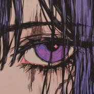

Pulse
Главная
Понравившиеся
Плейлисты
Предпочтения
Рекомендации для вас
Понравившиеся треки
Создать плейлист

Трек не выбран
Исполнитель
0:00
0:00
Pulse Player
Трек не выбран
Исполнитель
Эквалайзер
Выберите любимых исполнителей
Выберите до 10 исполнителей для персонализации рекомендаций
Сохранить
Создать плейлист
Отмена
Сохранить
Добавить в плейлист
Выберите плейлист для добавления трека
Отмена